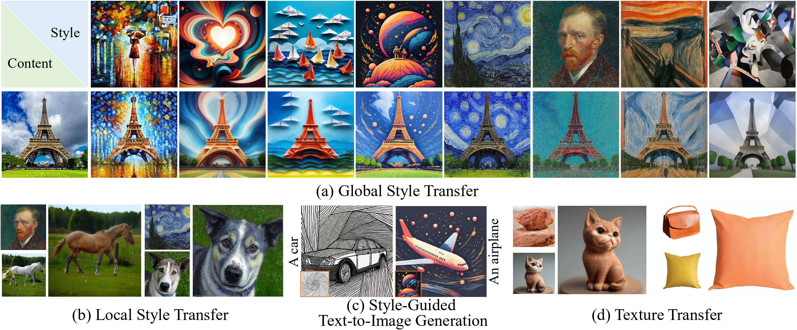
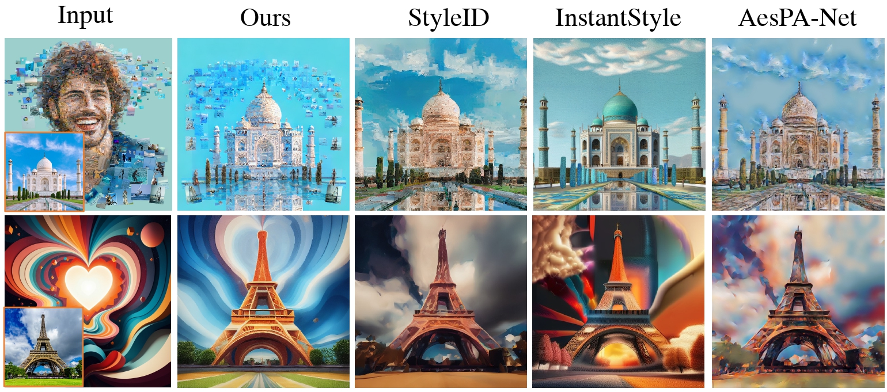
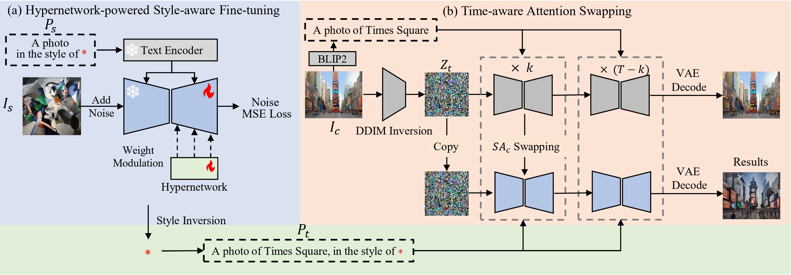
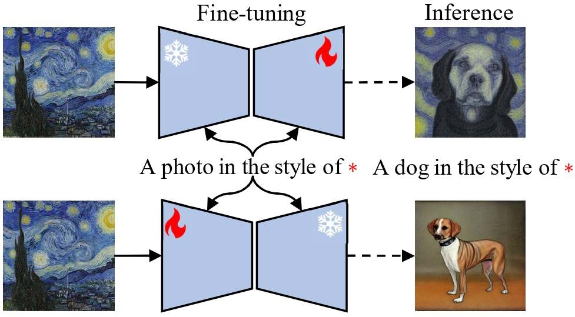
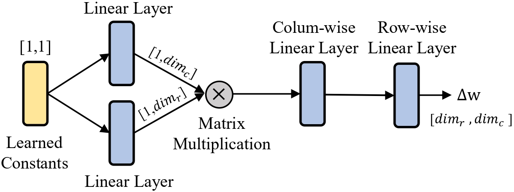
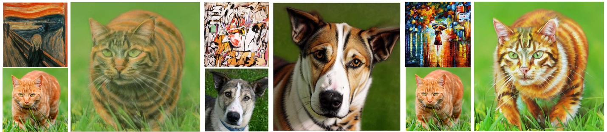
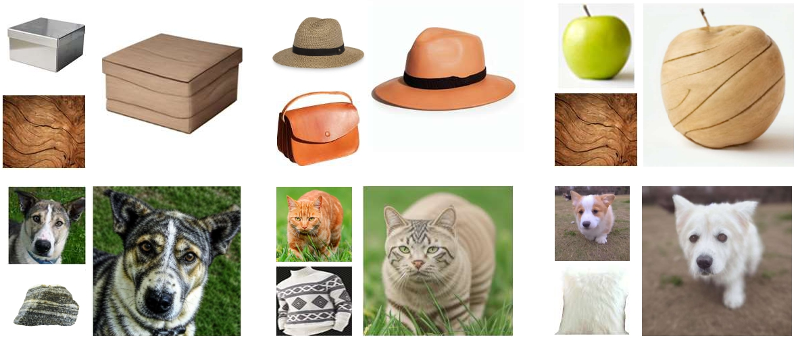
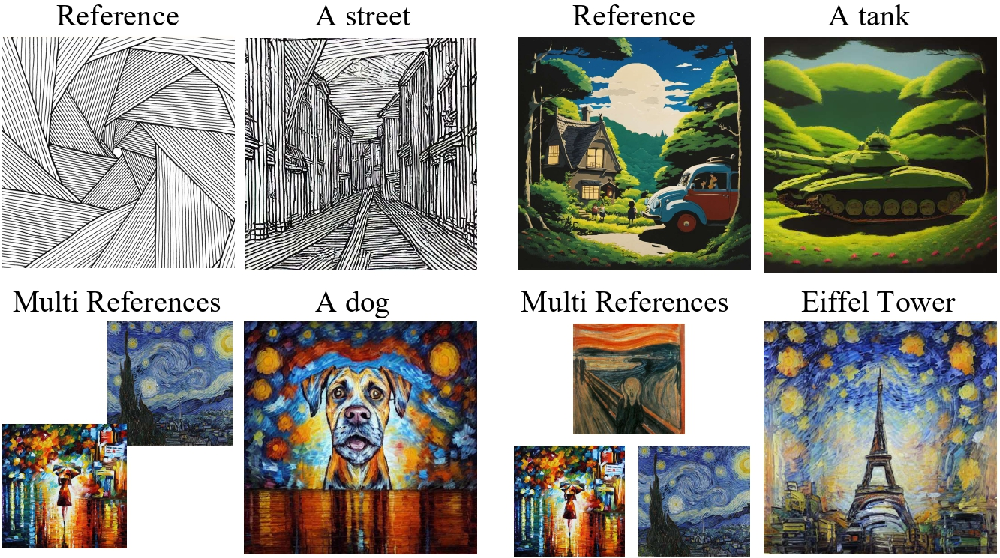

Abstract
Style transfer enables integrating artistic style into content images. Existing methods often miss the unique, recognizable visual signature of style (e.g., structural motifs, color palettes, brush patterns). SigStyle learns signature style via a personalized text-to-image model and a hypernetwork-based style capture module. We further introduce time-aware attention swapping to preserve content structure during transfer, and demonstrate superior quality across diverse style transfer settings.
Background
Signature style transfer remains underexplored. While many methods transfer coarse color statistics, they struggle to preserve key artistic patterns and compositional identity from style references.

Approach
Given a reference style image, SigStyle performs hypernetwork-powered style-aware fine-tuning and represents style using a special token. We combine DDIM inversion with time-aware attention swapping to preserve content while injecting style traits.



Global style transfer

Local style transfer

Cross-domain texture transfer

Style-guided text-to-image generation

Acknowledgements
This work is supported in part by the National Natural Science Foundation of China (No. 62202199, No. 62406134) and the Science and Technology Development Plan of Jilin Province (No. 20230101071JC).